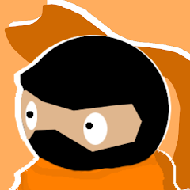
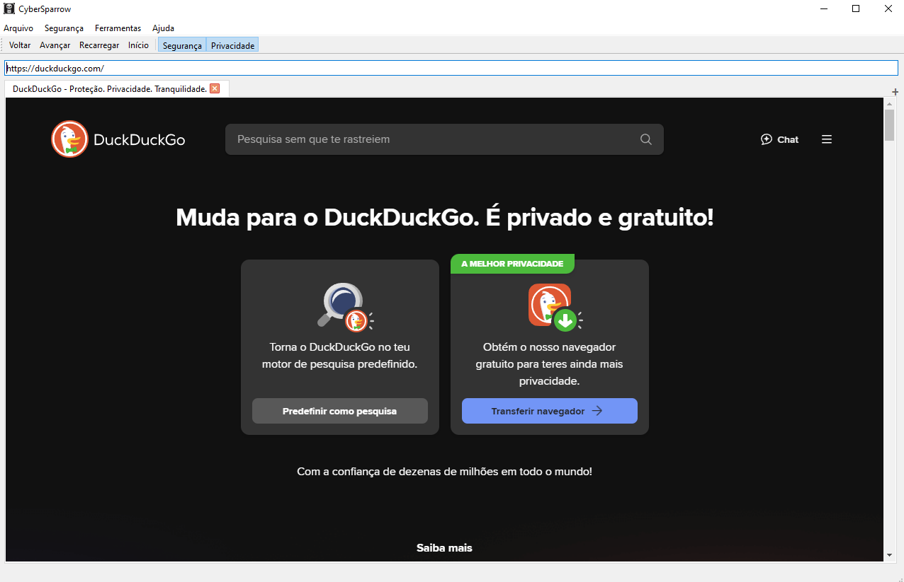
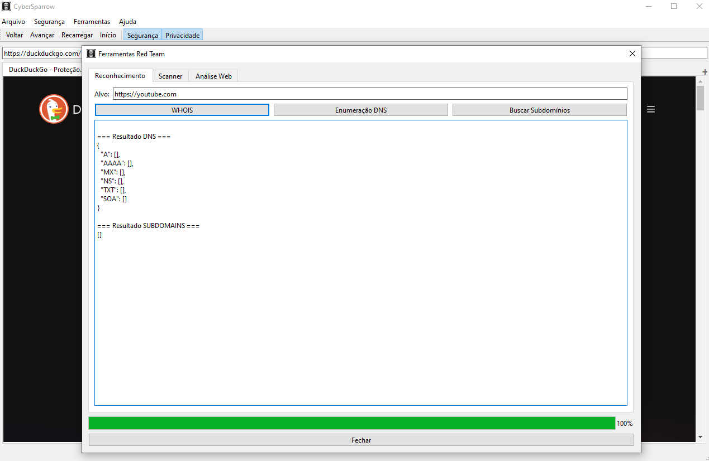
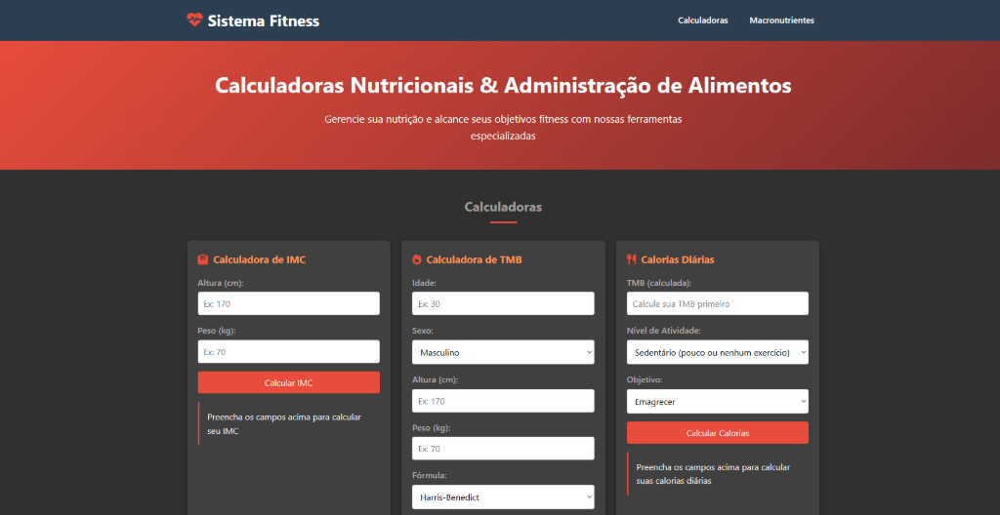
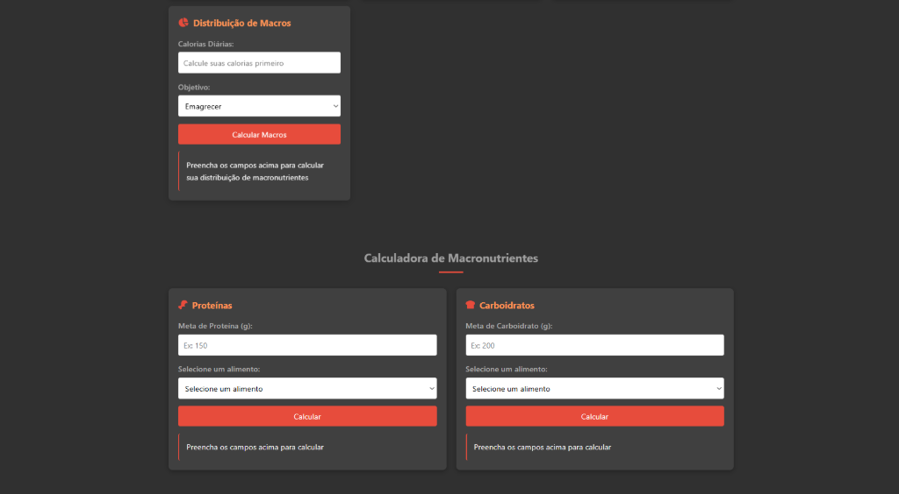
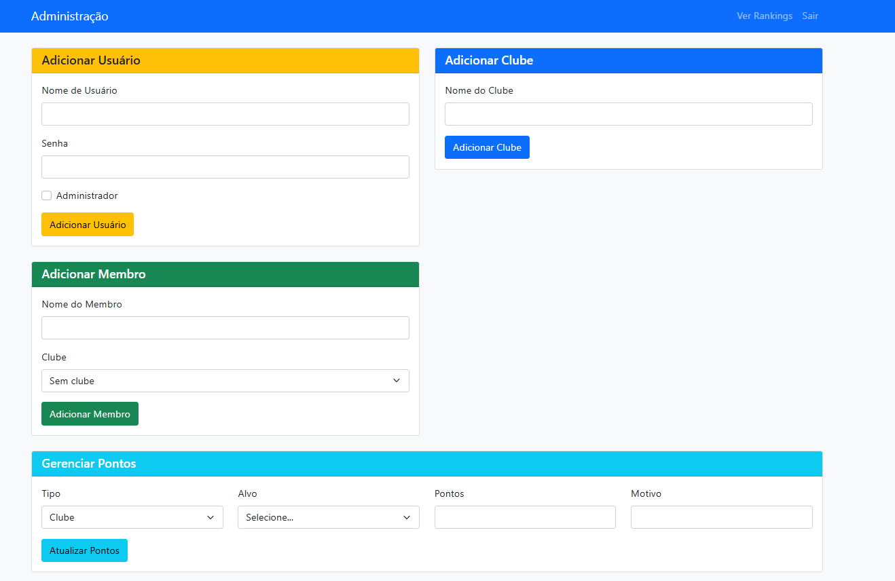

Olá me chamo Lucas, atualmente trabalho com desenvolvimento web através de uma ferramenta chamada
ScriptCase.
Trabalho com diversas ferramentas da Web sendo elas HTML, CSS, Javascript e PHP, porém com
um foco maior no PHP junto a banco de dados mySQL.
Já trabalhei com outras ferramentas além do ScriptCase sendo ela o CodeIgniter 3,onde iniciei
minha carreira com desenvolvimento web, também tendo um grande foco no PHP.
Além do desenvolvimento web tenho como hobby o desenvolvimento de jogos através da engine unity3D,
desenvolvimento não somente scripts mas também fazendo ilustrações com as ferramentas photoshop cs6
e paintTool Sai.
Aqui estão alguns dos meus projetos:

Hungry Ninja é um jogo mobile casual desenvolvido na Unity Engine. O objetivo principal é desviar de obstáculos enquanto coleta alimentos para acumular a maior pontuação possível. O jogo apresenta controles simples e uma jogabilidade viciante, ideal para sessões rápidas.
Um navegador web experimental construído em Python, utilizando a biblioteca PyQt5 para a interface gráfica. O projeto foi desenvolvido com foco em aprendizado sobre segurança da informação e exploração de funcionalidades de navegadores, como gerenciamento de histórico e navegação segura.
Ver código-fonte no GitHub


Uma aplicação web interativa focada em nutrição e saúde. O sistema oferece diversas calculadoras úteis, como cálculo de Índice de Massa Corporal (IMC), Taxa Metabólica Basal (TMB) e necessidades de macronutrientes (proteínas, carboidratos e gorduras), auxiliando usuários no planejamento de dietas e acompanhamento nutricional.
Acessar a aplicação


Sistema web desenvolvido em PHP com CodeIgniter 3 para gerenciamento de pontuações em atividades de equipes, especificamente criado para auxiliar na organização e acompanhamento de pontos das equipes de desbravadores da Igreja Adventista do Sétimo Dia. Facilita o registro e a visualização do desempenho das equipes em diferentes eventos e tarefas.
Ver código-fonte no GitHub
